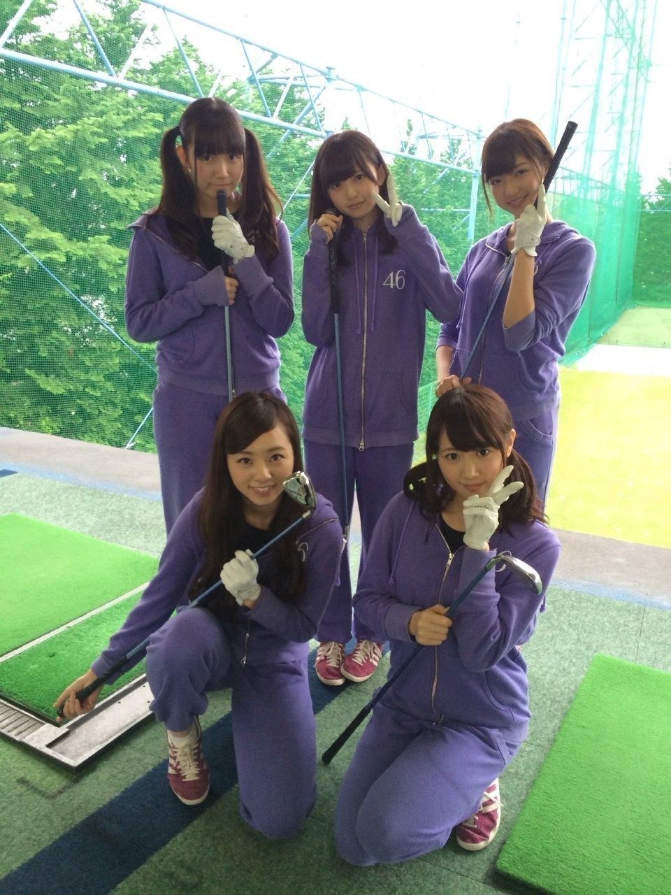
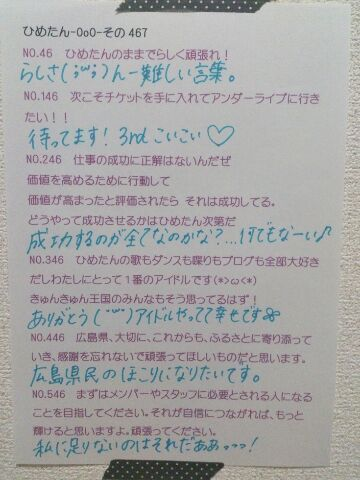
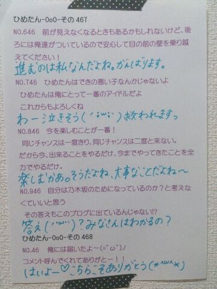

| 2014/11 01 Sat | ひめたん-OoO-その494 |
さて、今日は早稲田祭に
出演させていただきました
来てくださったみなさん
本当にありがとうございました！

れなりん！
アドレナリン全開！
久々に会ったら
おねーさんになってた♡
今も夢に向かって
頑張ってるそうですよ～
れなりん応援してる！らぶ！
そしてライブは
今回はじめてのポジションばかりで
始まる前は不安だったのですが
おうちでの脳内ライブのおかげで
本番は楽しんで歌えました！
早稲田祭ならではのMCコーナーがあったり
一緒に盛り上がることができて
濃ゆい90分になったかなあ～と思います
乃木坂のライブは
はじめてのひともたくさんいたと思うけど
楽しんでもらえたかな？
ひめたんもはじめての学祭だったから
学校にアイドルとして行く感覚が
なんか不思議な感じがしたなあ
今日のひめたんは
はじめてだらけみたいだね♡
すてきなステージを
用意してくださった
早稲田祭のスタッフのみなさん
本当にありがとうございました！

のぎ天でゴルフサークル結成☆
ひめはゴルフのド初心者。
料理も釣りもゴルフも
何もできないんだもん私(゜ω゜)
でも、いつか、いつかは
みんなでおっきい大会出よう！笑
観てくれたひとは
感想待ってます～♪
それから、
乃木坂46SHOWのオンエアが
先ほどありました
日記で告知できなくてごめんね( >_< )
観てくれたひといるかなあ？
「あの日 僕は咄嗟に嘘をついた」
スタジオライブでフルバージョンを
披露するのははじめて。
お、またはじめて(笑)
アンダー曲は前回に引き続き
ダンスばりばり～な感じの
かっこいい感じになってます
アンダーライブでもたくさん披露して
この曲は本当に特別。思い出たくさん。

明日は個握、明後日は全握！
遊び行くよ～ってみなさん
よろしくお願いします♡
個握は1～4部に参加します
おねぼうさん注意だよ？
ひめ寂しくて拗ねちゃう:(´◦ω◦｀):
それから
りぼん・名札・ひめTシャツ etc............
せっかくだから忘れ物ゼロ目指そう！
全握はせいらりんとペア\( ˆoˆ )/
らりん一家のみなさん
1日よろしくお願いします
ひめたんとも仲良くしてください♡
実はらりんと組むのはじめてなの～
さらに10thから
ミニライブ復活します！
握手会とライブと
盛りだくさんな1日になる予感( ˇωˇ )
10th楽曲おさらいしてきてね～
755始めました
ぜひチェックしてみてね～
もちろん日記やめーるも
これまで通りのペースを守るつもりなので
ご安心を♡♡

 ひめたんパンツスタイルに
ひめたんパンツスタイルに
することはあるの？
パンツはほとんど持ってない( >_< )
私服の9割は
スカートかワンピース！
ひめたんはブログのコメントは
敬語がいい？
それともタメ口がいい？
みなさんにおまかせするけど
タメのほうがなんかすき(´pωq`)
ひめたんは広島に帰りたいなぁって
思うことありますか？
思うよ！毎日思うよ～
でも今は地元のおともだちみんな
受験で忙しい頃だろうから
帰ったとしても会うのも電話もガマンです。
戻れるとしたらいつの自分に戻りたい？
中学2年生！
部活も習い事も頑張ってたし
毎日が楽しかったなあ
「2年生」っていいよね～＊
ぶろぐかくときに
気をつけてることある？
いろいろ自分の中でルールはあるけど
いちばん考えるのは
みんなに伝えたいことを全部書く！
日記書いたあとで「はっ............」っての
悔しいもん！常にネタ探してますよ～
ひめたん文化祭したことあるー？
何したー？
高2の時はお化け屋敷した( º∀º )･∵.
いやああぁぁあ高校生終わるー

ひめたんの日記の
コメント欄下２ケタに46を踏んだ方へ
手書きでコメ返するコーナー
＼ ひめたん46 ／


いつもたくさんのコメント
ありがとうございます！
もっと気軽に更新してくれて
いいんだよって言われて
なんか力抜けたよ(´;ω;｀)♡
日記はアイドルになったばかりの頃から
私がずっと大切にしてきたんだもん
ひめたんの日記を見て
ファンになりました！って方も
いらっしゃることが私は誇りです。
これからも更新頑張るから
みんなもいっぱい遊びに来てね！
もちろんコメントも読むからね\( ˆoˆ )/
(＊´・ω・＊)
コメント(918)
2014/11/01 23:42